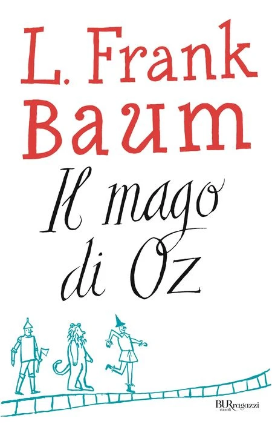
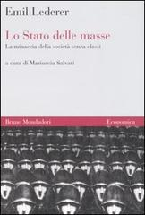

1:12:59 · 7 OPERE
Emil Lederer: Lo Stato delle masse.
Il filo del discorso
Il contributo legge Lo Stato delle masse di Emil Lederer come un’indagine sulla forma moderna della dittatura. La sua novità, nell’interpretazione proposta, consiste nel distinguere gruppi sociali, folla e massa e nel chiedersi che cosa accada quando uno Stato distrugge le articolazioni della società per sostituirle con una mobilitazione permanente. La biografia dell’esule, le relazioni fra intellettuali e la University in Exile introducono una riflessione sul patrimonio culturale che il relatore considera trascurato. La lettura segue soprattutto il rapporto fra propaganda, emozioni e formazione delle opinioni. Stampa e radio permettono di raggiungere persone isolate e farle sentire parte di una massa; la partecipazione emotiva non coincide però con un potere autonomo dei destinatari. Il relatore applica ripetutamente questi concetti alla politica e alle controversie sanitarie del proprio tempo. La scheda distingue tali analogie dalla descrizione storica dei totalitarismi e mantiene attribuite le accuse alle istituzioni e alle categorie professionali. Un secondo nucleo riguarda la responsabilità della scienza. Le guerre, la crisi della fiducia nel progresso e la separazione fra fatti e valori conducono alla domanda se gli scienziati possano rinunciare a difendere libertà di discussione, autonomia personale e rispetto della verità. Husserl e Wittgenstein accompagnano questo percorso. La conclusione sugli scrittori come ingegneri delle anime, attribuita a Stalin, contrappone la cultura come controllo alla cultura come possibilità di resistere. Le note precisano la storia della Magna Carta, le armi chimiche e i premi Nobel, senza colmare le parti fragili dell’ASR con ricostruzioni arbitrarie.
I libri nel discorso

Il mago di Oz
Copertina: BUR Ragazzi · 2000
Immagine autentica dell’opera, controllata visivamente; l’edizione di riferimento non è attribuita al filmato.
Il relatore nomina L. Frank Baum e Il mago di Oz. Il romanzo è distinto dalla formula inglese sul manovratore dietro la tenda, nota soprattutto dalla versione cinematografica.
Passaggio 1:32 ↗ · Fonti e libro ↗
Il mago di Oz / The Wizard of Oz
Identificazione probabile
Immagine ufficiale Warner · edizione4K del film del1939: Film MGM,1939, con Judy Garland; la scheda Warner reca25 agosto1939. Immagine promozionale ufficiale della distribuzione4K attuale, non una stampa originale della prima uscita e non copertina del romanzo del1900.
Keyart contemporaneo della versione4K, proveniente dalla scheda Warner Bros. Non datato come poster originale1939 e non attribuito alla specifica scena dietro la tenda.
La formulazione Pay no attention to that man behind the curtain corrisponde probabilmente al film del 1939. Il relatore attribuisce il richiamo a Baum: non confusi sceneggiatura e romanzo.
Passaggio 1:42 ↗ · Fonti e libro ↗
Lo Stato delle masse. La minaccia della società senza classi (State of the Masses)
Copertina autentica dell’edizione italiana Bruno Mondadori: Bruno Mondadori · Economica, 2007 · a cura di Mariuccia Salvati, traduzione Paolo Capuzzo · ISBN 9788842420866
Copertina autentica dell’edizione Economica 2007, bibliografia verificata presso l’editore; nessuna prova che sia l’esatto esemplare impiegato nel video. La prima edizione italiana del 2004 e la ristampa 2007 non sono censite come opere diverse. Il segnaposto dell’attuale catalogo Sanoma è stato escluso.
Lo Stato delle masse è il testo centrale esplicitamente nominato; da 662 secondi compare il titolo inglese. Letture e parafrasi si estendono attraverso quasi tutto il contributo.
Passaggio 3:40 ↗ · Fonti e libro ↗
Massa e potere
Copertina: Adelphi · gli Adelphi · 2015
Copertina autentica controllata visivamente. Edizione di riferimento, non identificata come quella usata nel video.
Canetti e Massa e potere sono nominati nella ricognizione degli studi sul fenomeno delle masse. Riutilizzata la voce esistente.
Passaggio 6:45 ↗ · Fonti e libro ↗
Magna Carta (1215)
Riproduzione istituzionale della Magna Carta del 1215: Documento del 1215 · riproduzione nel fascicolo istituzionale The National Archives, Magna Carta Lesson 3, pagina 1
Immagine dell’intera pagina del fascicolo che riproduce la pergamena, renderizzata senza alterare il contenuto. Non copertina, non manoscritto del 1679 e non fotografia dichiarata di un esemplare materiale identificato dal video.
La Magna Carta è nominata nel richiamo all’habeas corpus. La scheda distingue carta medievale, sviluppo del rimedio giudiziario e diritti sanitari contemporanei.
Passaggio 25:23 ↗ · Fonti e libro ↗
La crisi delle scienze europee e la fenomenologia trascendentale
Identificazione probabile
Copertina autentica del Saggiatore: Il Saggiatore · La cultura 971, edizione 2015 · traduzione Enrico Filippini · ISBN 9788842821731
Copertina ufficiale della ristampa italiana di riferimento. Non ricondotta l’intera opera al solo dopoguerra 1918: sviluppo negli anni Trenta, pubblicazioni parziali e volume postumo vanno distinti. L’edizione fisica citata non è identificabile.
Krisis di Edmund Husserl è nominata come grande opera sulla crisi delle scienze. Il titolo è abbreviato: identificazione probabile mantenuta.
Passaggio 46:47 ↗ · Fonti e libro ↗
Tractatus logico-philosophicus
Copertina del volume che comprende il Tractatus: Einaudi · Tractatus logico-philosophicus e Quaderni 1914–1916 · 2009
Copertina del volume Einaudi che comprende sia il Tractatus sia i Quaderni 1914–1916. La voce identifica il Tractatus; l’ISBN appartiene al volume contenitore e l’edizione non è accertata nel filmato.
Wittgenstein e Tractatus sono esplicitamente nominati nel discorso su fatti e giudizi. La successiva frase tedesca è fragile nell’ASR e non viene trasformata in una citazione sicura del Tractatus.
Passaggio 53:03 ↗ · Fonti e libro ↗Minutaggi ricavati da testi automatici, da riascoltare. Le identificazioni probabili sono segnalate accanto ai libri.